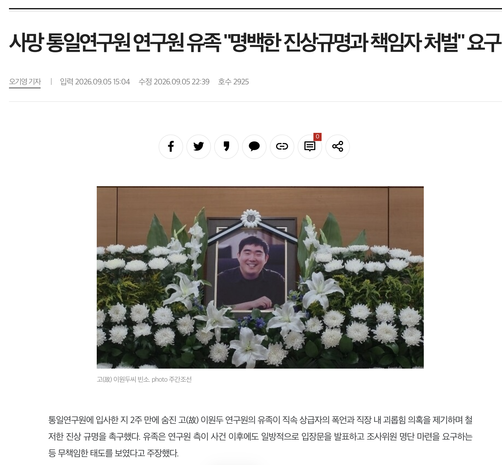
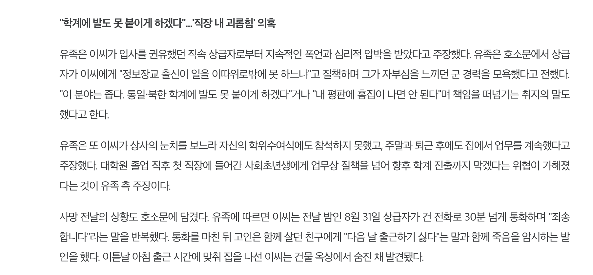
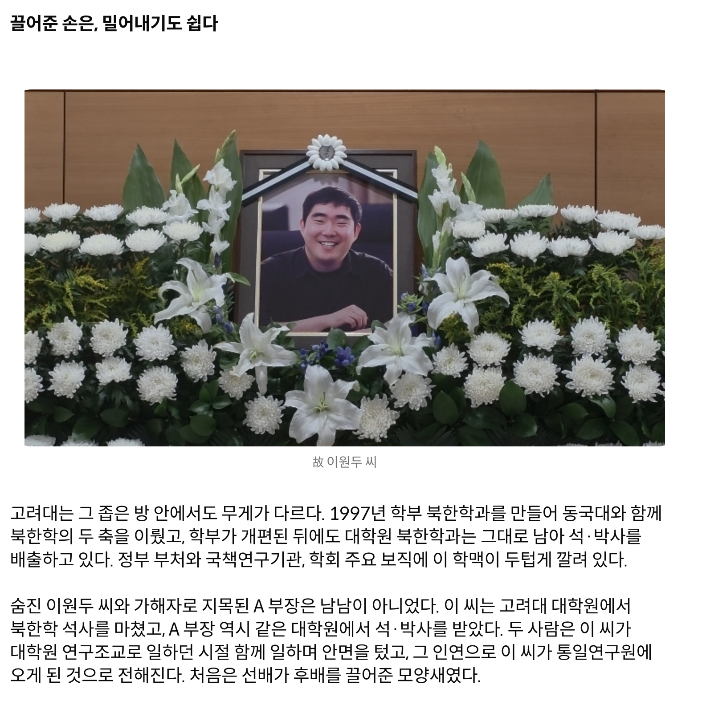
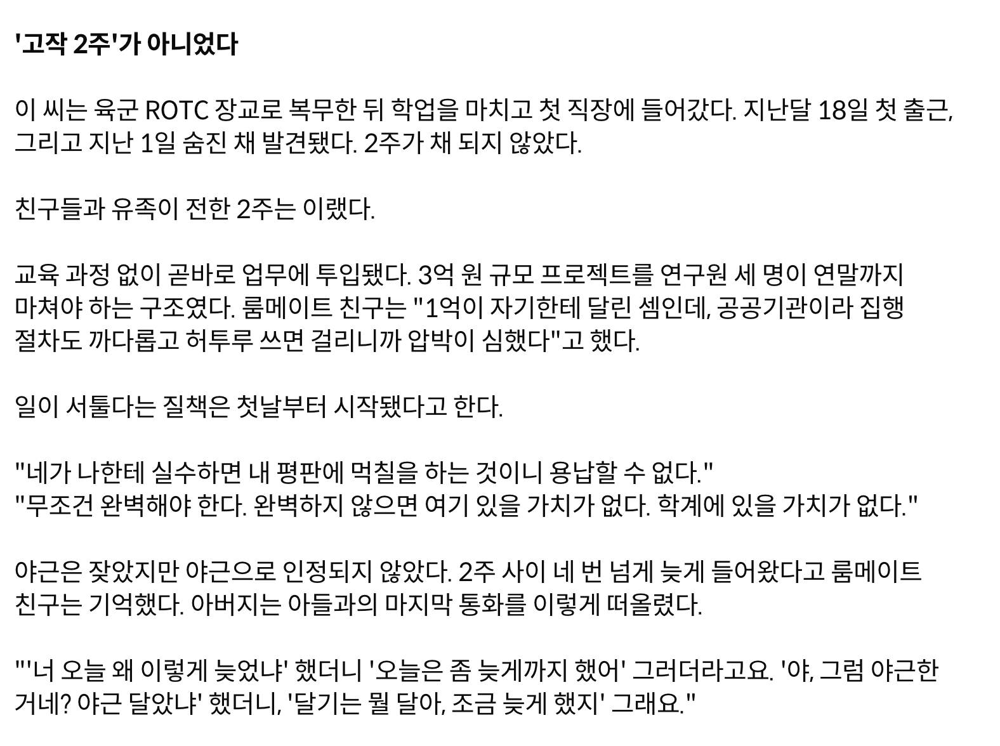
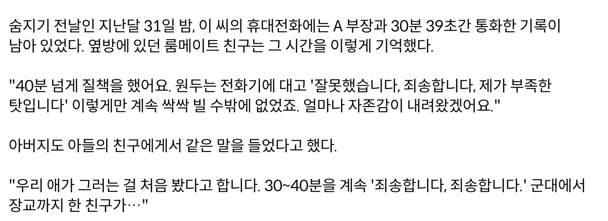
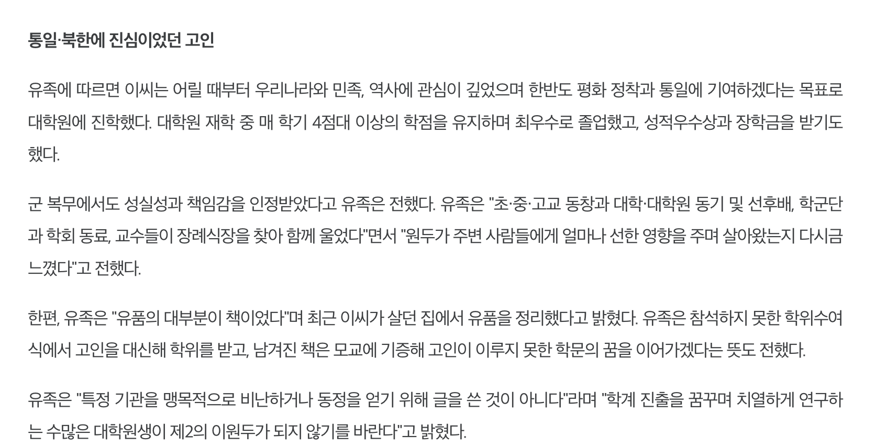
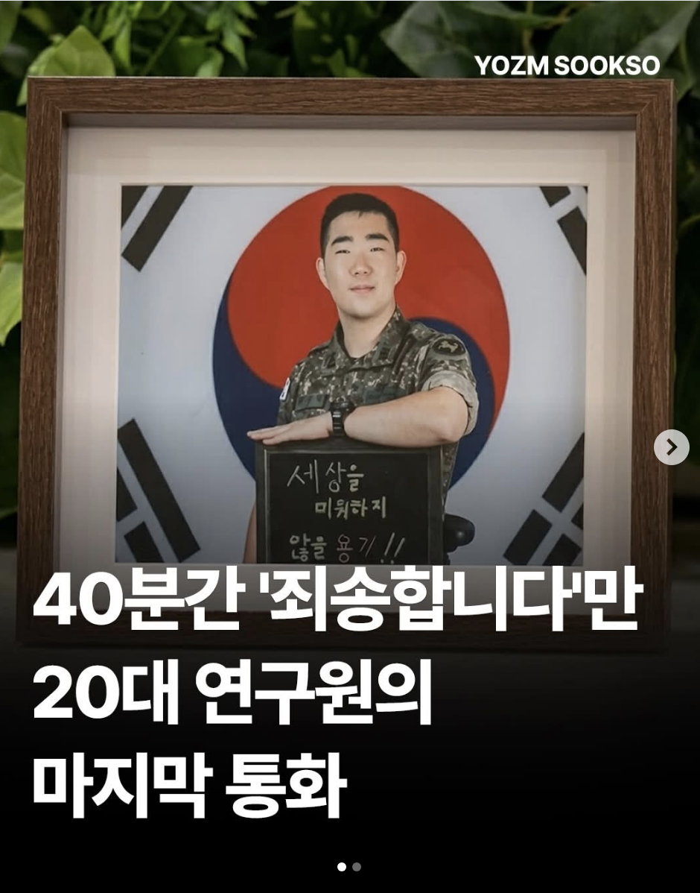
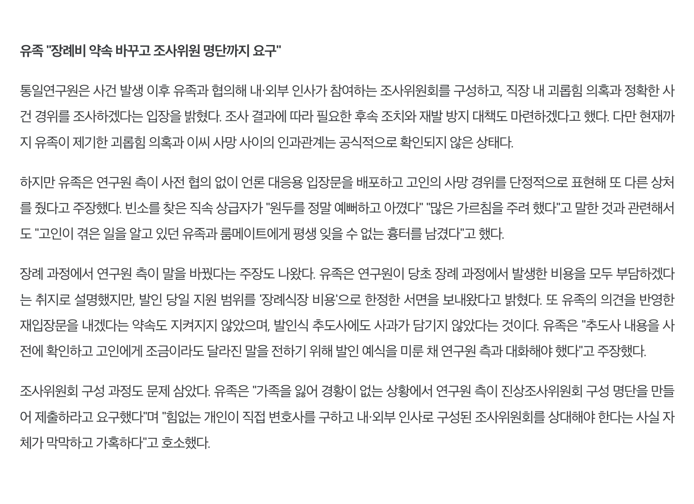

2026년 9월 1일 고 이원두 연구원이 숨진채 발견됨. 이원두 연구원은 입사한지 2주밖에 지나지 않았음. 통일연구원은 일방적으로 이원두 연구원의 죽음을 극단적 선택으로 축소하는 보도자료를 내놨음 ㅇㅇ 진짜 개인의 일탈일까? 당연히 아님

이 연구원은 입사를 권유했던 직속 상급자로부터 지속적으로 괴롭힘을 받아왔음. 특히 통일 북한 학계에 발도 못 붙이게 하겠다는 협박을 서슴치 않았음. 이건 흔히 인터넷 썰에서 보이는 "내가 이 업계에 발도 못 붙이게 하겠다" 따위의 허울뿐인 협박이 아니었음. 국내 북한학계는 정말 좁기 때문임..
94년 동국대에서 처음 문을 연 북한학과는 김일성 사망 이후 통일이 목전에 다다른 것처럼 여겨지던 시기 6개 대학으로 번졌음. 그러다 남북관계가 얼어붙고 취업문이 좁아지면서 간판이 하나 둘 내려가기 시작했음.. 이제 학부에 북한학과를 유지하고 있는 종합대학은 동국대 말고 없음
대학원도 크게 다르지는 않음. 일반 대학원 학위 과정으로는 동국대, 고려대 세종캠, 경기대 정치전문대학원, 북한대학원대학교, 이화여대 정도가 학위과정을 유지중임. 학계에서는 북한학 학-석사도 매년 줄어들고 있다는 말이 나오는 상황이고
결정적으로 10년 넘는 연구와 논문 심사를 통과해서 학위를 쥐어도 갈 곳이 없음 해봤자 통일연구원, 국립통일교육원, 국가안보전략연구원, 세종연구소, 경남대 극동문제연구소, 그리고 소수의 대학 부설 연구소, 여기에 통일부와 관련 공공기관 + 언론사 전문기자까지 끌어모아도 신규 진입 자리는 1년에 10자리 안팎임 ㅇㅇ =그리고 이 중심에 국무총리 산하 국책연구기관으로 설립되 80명 규모를 유지하는 통일 연구원은 북한학계의 본산으로 통하고 있음
이렇게 좁다는건 단순히 자리가 적다는걸 의미하지 않음 ㅇㅇ 그냥 한다리만 건너도 서로가 서로를 안다는 말임. 논문 심사위원이랑 발표자가 다음 학회에서 같은 테이블에 앉고, 이번 프로젝트에서 갑이었던 사람이 다음 프로젝트에서는 을이 됨.. 논문심사, 연구용역 평가, 채용추천서 학회 발표 기회가 전부 같은 인맥망 위에서 돌아간다는거임
여기서 상급자가 "이 업계에 발도 못 붙이게 하겠다"는 진짜 실현 가능한 협박임..

앞선 스크린샷에서 이 연구원에게 지속적인 폭언과 압박을 가한 직속 상급자가 입사를 권유한 사람이라는 말을 기억해야 함. 이 연구원과 상급자는 같은 대학원 출신임 ㅇㅇ 만난 것도 이 연구원이 대학원 연구조교로 일하면서 알게되었고 그때 인연으로 통일 연구원에 입사한 것
하지만 추천으로 들어온 자리는 추천해준 사람의 말 한마디로 흔들림.. 이게 좁디 좁은 북한학계와 만나면 최악의 시너지를 발휘하게 되는 것임. 이 연구원의 2주는 지옥이었음


교육 없이 바로 업무 투입되서 2주 내내 사람을 닦아댐 ㅇㅇ 거기에 실수하면 학계에서 매장해버리겠다는 협박은 덤이었음

이런 협박과 자존심 깎아내리기는 통일과 북한학에 열정을 가지고 군 복무도 정보장교로 성실히 한 고인에게는 큰 상처였음
그렇게 이 연구원은 출근 2주만에 건물 옥상에서 숨진채 발견됨


참고로 죽음으로 몰고간 직속 상급자는 "빈소에 방문해 고인을 정말 예뻐하고 아꼈다, 많은 가르침을 주려 했다" 라고 말하고 감ㅋㅋ
그리고 연구원 측의 사과는 없었음
관련기사)
https://news.jtbc.co.kr/article/NB12316631
https://weekly.chosun.com/news/articleView.html?idxno=55000
https://news.tvchosun.com/site/data/html_dir/2026/09/04/2026090490206.html
https://imnews.imbc.com/replay/2026/nwdesk/article/6849196_37004.html
제발 얼굴 까발리길